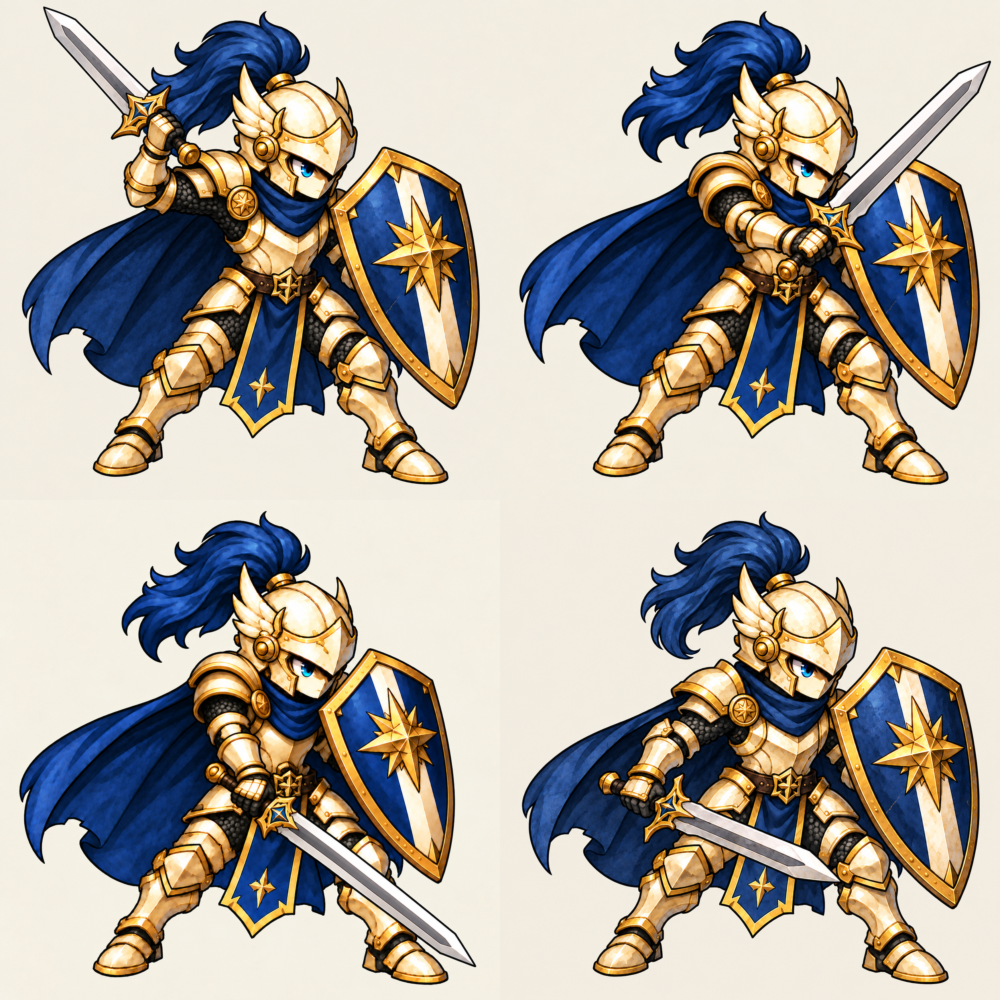

방패병 · 대각선 내려베기
찌르기 시안을 대신하는 베기 키포즈 검토본입니다. 3개 새 포즈와 기존 대기 자세를 연결했습니다. 불투명 후보이며 실제 게임 화면이 아닙니다.
준비 · 200ms
관찰용 시간: 200 / 70 / 150 / 280ms. 게임 공격속도 확정값이 아닙니다. 자동 재생하지 않습니다.
시트·미완료 항목

검 길이·갑옷/천 장식의 프레임 차이, 투명화, 추가 연결 프레임과 발 피벗 검증이 남았습니다. 마지막은 별도 회복 동작이 아닌 기존 대기 자세입니다.